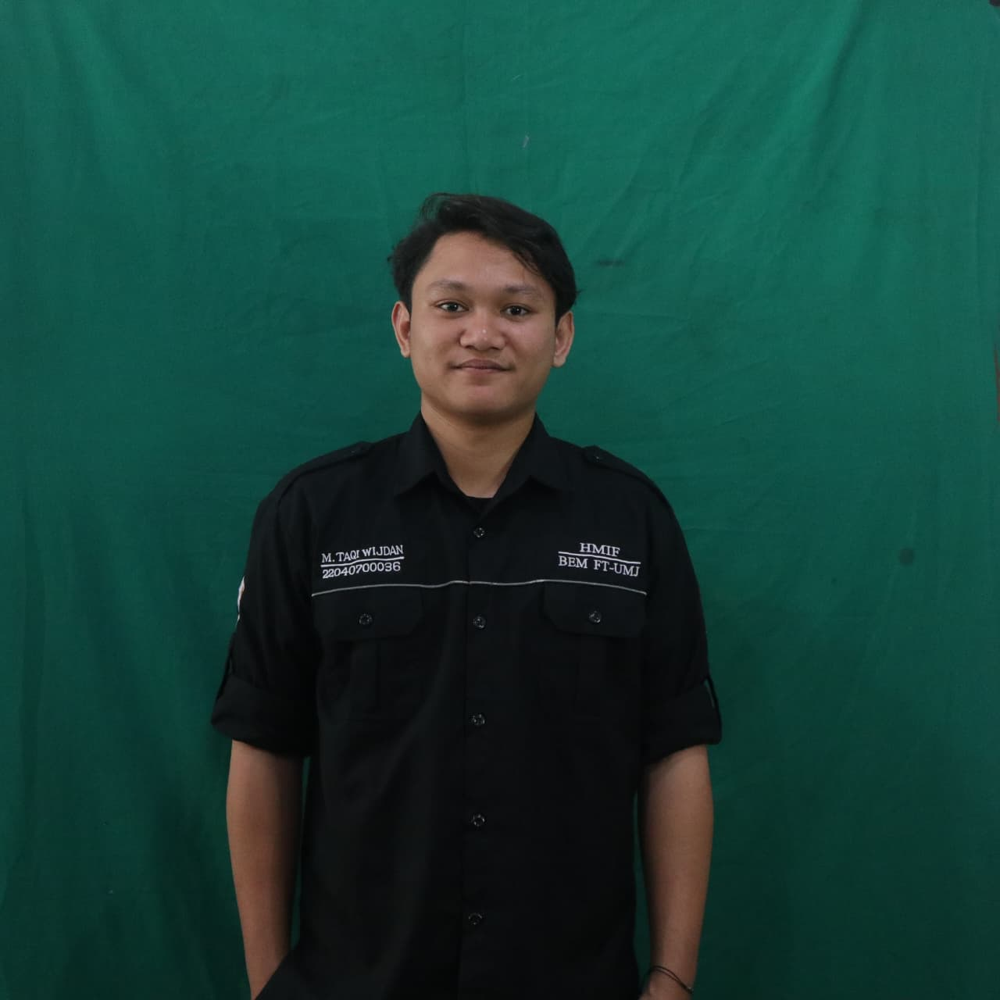

01
Data & Analytics
Data processing, cleaning, analysis, and visualization using MySQL, Microsoft Excel, and Power BI, with a focus on turning raw data into meaningful insights.

Portfolio & Selected Works
I’m an Informatics graduate with a passion for technology, data, and digital solutions. With experience in programming, data analytics, database management, UI/UX design, and artificial intelligence, I enjoy exploring ideas, solving problems, and transforming them into practical and meaningful solutions. I’m always eager to learn, adapt, and grow in a dynamic technology environment.
INFORMATICS GRADUATE & TECHNOLOGY ENTHUSIAST
Technology is most meaningful when it solves real problems. I’m passionate about exploring how technology, data, and design can work together to create practical and meaningful solutions.
With a background in Informatics, I have explored various areas of technology, including software development, data analytics, database management, artificial intelligence, and UI/UX design. I approach each project with curiosity, structured thinking, and a commitment to continuous learning.
I’m an Informatics graduate with a broad interest in technology and digital innovation. My experience comes from academic projects, data-driven projects, and organizational activities, where I have developed skills in programming, data processing, database management, visualization, artificial intelligence, and digital design.
I enjoy learning new technologies, solving problems, and transforming ideas into practical solutions. Whether working independently or collaboratively, I value clear communication, creative thinking, and continuous improvement.
“Meaningful solutions begin with curiosity, structured thinking, and the willingness to keep learning.”
— Muhammad Taqi Wijdan
01
Data processing, cleaning, analysis, and visualization using MySQL, Microsoft Excel, and Power BI, with a focus on turning raw data into meaningful insights.
02
Building practical digital solutions using Python, Java, C++, database technologies, and web development, with a focus on solving real-world problems.
03
Exploring Artificial Intelligence, Computer Vision, UI/UX, and digital design to create practical, user-focused solutions through technology.
This project analyzes the decline in profitability of the Corporate segment across the Central US region throughout 2014. The objective was to diagnose the drivers behind that decline and recommend a strategy capable of increasing segment profitability by 15% in 2015.
This project develops an automated deep learning solution for acne detection and classification. The Acne Classification Dashboard leverages YOLOv8 computer vision technology to enable rapid, consistent identification and severity assessment of acne types. By automating the detection process through a web-based Streamlit interface, the application accelerates dermatological diagnostics and provides users with visual feedback on acne classification in real time.
I’m a Computer Science graduate with an interest in Artificial Intelligence, Data Analytics, Software Development, and Database Management. I enjoy turning data, technology, and ideas into practical solutions while continuously developing my skills in the field of Information Technology.